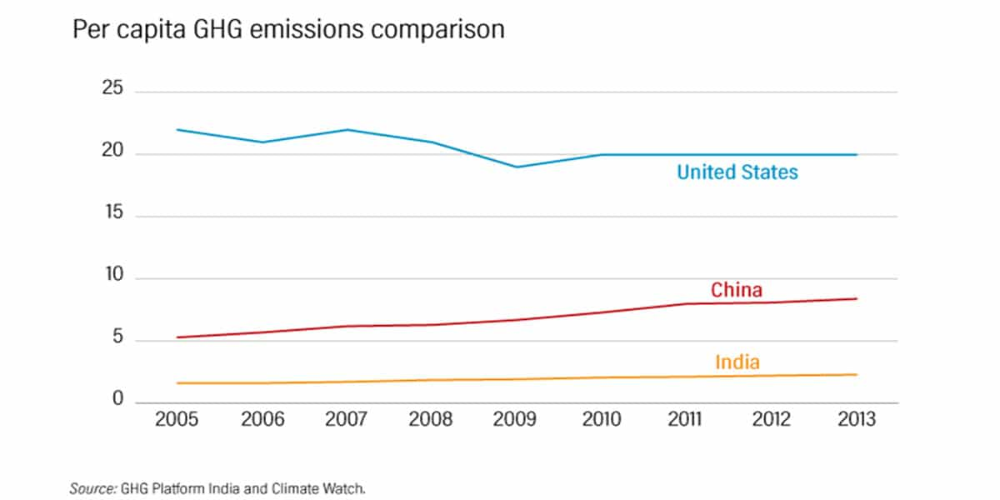

Review 2020 -21 India’s tryst with climate change and where we stand
The year 2020-21 will be remembered in history for the obvious mayhem of the Covid19 pandemic. The other issues around the world seem to be gone in the backend. But not the environmental ones and the climate change issue.
Last year, Delhi and its neighbouring states experienced the prolonged and freezing spell in December, since 1997. Summers were hottest; July 2019 was the planet’s warmest month in 140 years, as per NOAA (The National Oceanic & Atmospheric Administration). The year 2020 did not start on a good note either; Forest fires broke out in Srinagar of Pauri Garhwal area of Uttarakhand in late May. A deadly tropical cyclone Amphan played havoc in Easter India, leaving a trail of substantial damage to lives and infrastructure. The rise in the temperature of our atmosphere has increased the number of unprecedented extreme events like cyclones, floods, heatwaves, and droughts.
Global warming has paced up since the last few decades; India being a developing country, contributes majorly to this direction. In ambition of achieving a strong position on the world’s map, India has adopted the industrial revolution to the greatest extent, which has resulted in adding a higher concentration of methane and carbon dioxide gases into the atmosphere.
Our country is very vulnerable to climate change. The rise of temperature is causing irreversible melting of Himalayan glaciers, erratic monsoons, extinction of species, increased frequency of floods & cyclones. The impact of climate change is too evident due to our population density and economic instability. Being an agriculture-based country and resilience over natural means for crop production, we are the ones who get heavily hit by these extreme climatic changes.
What do the Numbers Say?
Greenhouse gas (GHG) emissions in India account for 6.5 percent of the 2014 global total. This fact is based on the data from the World Resources Institute. Most of India’s emission comes from the Energy sector.

The annual industrial emission is growing at a rate of 8.89 percent, based on CEEW’s analysis.
Disruption of water cycles is often the first visible impact of the changes in the climate. Chennai experienced poor rains in the monsoon 2019. And the degradation and disappearance of lakes & tanks led to an absence of water storage, resulting in severe water scarcity.
As per the 2018 report of Lancet’s countdown on health and climate change, there is an increase of 40 million people who have been exposed to heatwaves in India between 2012-2016. According to the environment ministry, around 2400 Indians have lost their lives to floods and cyclones in the year 2018-19. The average temperatures of India have increased by 0.6 degrees Celsius (° C) between 1901-10 and 2009-18. These figures have been reported in the IMD data released by the statistics ministry.
Such situations are a result of human activities, faulty development models, and poor crisis management. One thing leads to another. Due to droughts and high temperatures, the algal blooms and concentrated chemical pollutants are added in the environment. It puts stress on the health of the population, thus increasing their medical costs. The demeaning quality of groundwater is leading to water-related diseases. Agriculture is the largest consumer of groundwater and hence suffers a lot due to the emptying of aquifers and corrupted groundwater. According to Dr. Himanshu Kulkarni of the Advanced Centre for Water Resource Development and Management (ACWADAM), aquifers act as ubiquitous buffers to droughts and floods and is a sustainable solution in times of both extremes.
Paris Agreement – India’s take on climate change
The Paris Agreement, which came into existence on 4 November 2016, aims to bring all the nations together to combat climate change and take measures to reduce its impact, nationally and globally. There is a uniform motive: to keep the global temperature rise below 2 degrees Celsius above pre-industrial levels, for this century and further aim to lower it down to 1.5 degrees Celsius.
In this respect, a factor called Nationally Determined Contributions (NDCs) is invented. NDC embodies the efforts by each country to reduce its national emissions and support activities to adapt to the impacts of climate change.
Under the Paris Agreement, India ambitiously set the following three primary goals to be achieved within 2020 and 2030:
- 40% of the total electricity generation capacity must come from the non-fossil fuels,
- to reduce the emission intensity of the economy by 33 to 35% by 2030,
- To create an additional carbon sink of 2.5 -3 billion tonnes of CO2 equivalent through additional forest and tree cover.
By the end of 2019, India has succeeded in reducing the energy intensity by 25%, 78GW of renewable energy has been generated, and the forest cover has increased by nearly 15,000 sq. Km, as claimed by India’s Environment Minister, Prakash Javadekar, in the meeting of environment ministers from the BRICS and BASIC countries.
How are we trying to fix the problems?
Paris agreement has undoubtedly laid the framework for the developing countries as to what can be effectively done to help in combating global climate change. But there are many practical situations that a country like India has to deal with every day.
- Suitable cropping patterns in water-stressed agricultural areas is a critical challenge. It can be managed through incentives, pricing, or regulation and increasing the efficiency of water usage in irrigation.
Genetically modified crops are being consumed globally for over two decades now. India has been a little sceptical about this pattern, but GM technology is a significant component of ‘climate-smart agriculture’. More drought-resistant crops can be produced on the same patch of land, minimizing the land use that has been impaired by the climatic conditions.
- Lifestyle changes and political intervention through policies are needed to prevent water pollution and encourage reusing wastewater.
- Regulations must be practiced keeping a check over the unsustainable consumption of water in all industrial processes.
- Adaptation measures must be in place to cope with the inevitable effects of climate change, such as life-threatening storms, floods, and droughts.
Indian government’s initiatives such as Jal Shakti Abhiyan (JSA) facilitates a people’s movement on water conservation, watershed development, afforestation, and renovation of water bodies.
- A regulatory scheme, Perform, Achieve, and Trade (PAT), is designed to reduce energy consumption in energy-intensive industries.
Carnegie India hosted a debate with Navroz K. Dubash, the author of the book India in a Warming World: Integrating Climate Change and Development, to discuss India’s approach towards climate change. He asserted that India needs an increase in the research capacity for environmental and climate change research.
With these efforts, an analysis made by Vasudha Foundation shows a decline in emissions from agriculture, forestry, and other land-use (AFOLU) by 1.95 percent annually. India is also working to explore alternative sources of energy. There is a lot more on the plate, though.
Conclusion
N.S. Associates has been striving hard to make positive changes in our environment through our RWH consulting services, RWH products and other services. We are an award-winning trusted company with best of corporates to smallest of residential projects accomplished with same professionalism and perfection.